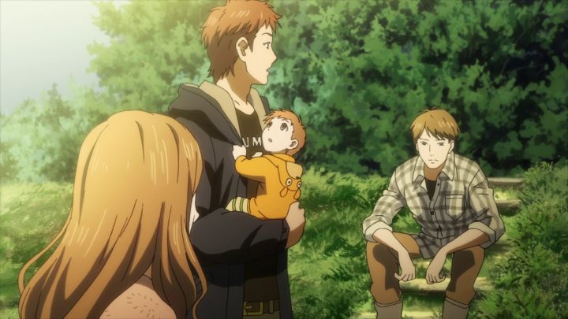

"Orange" is a popular romance manga that started in 2012, and was turned into an anime in 2016. It should not be confused with the similiarly-titled "Citrus," also a popular manga from 2012, also adapted into an anime, a bit later in 2018. The two are very different, and as far as I could tell, neither has anything to do with brightly-colored fruit."Orange" is a high-school-set romantic drama, with a loose sci-fi twist to keep things interesting. At a Japanese high-school, Kakeru is a new transfer student, a handsome but quiet black-haired boy. One of the cliques in the class, a group of five friends (Naho, Suwa, Chino, Hagita, and Murasaka), invite Kakeru to hang out with them. He does, and they seem to get along well. The thing is, Naho found a letter at her home that morning, written by herself, ten years into the future. It's written as a diary to her past self, and correctly predicts Kakeru's arrival that day. It also explains that Kakeru is dead when the future self is writing the letter: this is the reason Naho received the letter, as a request to fix her mistakes and regrets, hopefully to save Kakeru's life.Initially, the anime is vague about exactly how Kakeru dies, but later leans heavily into it being suicide, brought on by depression that evolves when his mother commits suicide herself on his first day at the new school. It oversimplifies things a bit for the sake of a television drama (see the anime film "A Silent Voice" for an example of the topic being handled better), but I'd argue "Orange" isn't really about suicide and depression. It's about regret. The show cuts between both the current and future versions of the five main friends, and all five have regrets, mostly around the loss of Kakeru. Kakeru himself, and his internal emotions, are based around regret, and the fear that interacting with others would lead to further events that he would regret, or cause others to regret. That part rings true, as something I think everyone can relate to in one form or another... again, pinning it all as only starting with Kakeru's mother is a huge simplification, but the intent was right. Having already become friends, Naho becomes concerned, and starts using the letter as a guide to how to help Kakeru. It's not so easy. Even when knowing what will happen and what not to do, awkardness or embaressment still gets in the way. She naturally begins to fall in love with him, making the situation more complicated: if she gets too close, she risks accidently hurting him even more. What ever will she do?But seriously, it gets more complicated then that. Naho eventually learns that she isn't the only one to have received a letter from the future regarding Kakeru. And her blossoming romance has serious implications: her future self had married Suwa, even having a child with him, living happily with that family. Will this new relationship mean they don't get married? Suwa clearly has feelings for Naho just as much as Kakeru does in the present time... would he be ok with backing down? Will this affect his life in a bad way? What other consequences could their actions cause?These questions are all brought up in "Orange," making for good drama in the moment. It also ignores most of them, leading to a simplfiied, happy ending the viewers are rooting for. "Orange" has 13 episodes, the final one being double-length (but the other episodes must have been a bit shorter than normal, such that the standard count of 25-minutes per episode on the back of the box remains true for the total). That final episode takes its time to help deliver that ending the right way. It still leaves Suwa out cold, which he constantly insists being ok with. Apparently, a sequel anime film called "Future" (with a manga to go along with it) retells the story from Suwa's perspective, with a bit of extra content. It seems like an essential addition, but sadly, the film was never released outside of Japan, leaving me with a slight hole in my satisfaction with that ending. The larger issue is how "Orange" leans into soap-opera-level stupidity for the sake of drama. I was constantly annoyed when Naho refuses the read the entirety of the letter at the beginning, making each day a surprise that she has to react to. Several moments occur where it seems obvious as to what to do, but Naho and gang doesn't do it, making me yell at the screen "HOLD HIS HAND" or "SAY YOU'RE SORRY," swearing when they miss the opportunity. Kakeru himself becomes a frustrating character. Even if his feelings are understandable at first, by the halfway point, I figured there was no saving him, and the attempts by his friends to help him only seem to do more harm than good. Did I mention the very on-the-nose metaphors, like the friends working together on "Track Day" to symbolize emotional support? The overall moral, a good one, is to be open and willing to talk about how you're feeling. As "Orange" shows, you might feel sorry for a moment others didn't worry about, and knowing that others want to look out for you can make a world of difference. The writing in "Orange" might not be perfect, but it's still a very compelling drama and sweet romance, thanks to the six main characters, a varied but natural-feeling group of close friends, supportive and already home to a potential relationship or two. I loved them all, and watched to see more of them. Caring about these multi-dimensional characters makes me much more invested in their future. The English dub does a good job bringing the characters to life, with a few clever lines in their conversational banter. "Orange" also benefits by a relatively strong production. Character designs are distinct for anime, enhancing large eyes and mouths for handsome and pretty people. The show has an attractive color scheme and beautifully detailed background art. Occasionally, the show edits in some cuts of a completely different style for montages or off-screen explanations, a welcome addition of variety that wasn't used often enough. Animation was good to start, but seems to get more workman-like as the episodes progress, with less and less motion and a lot of close-ups of static faces. Not to mention, characters in the far background clearly use CGI models, which was noticable, but I was willing to ignore it. The opening credits for "Orange" uses a brief shot of live-action trees, with sunlight breaking through the branches. Looking up at the sky is a common trope in anime. It represents melancholy, longing, memories of the past and dreams for the future. Also, of all the possibilities that lay before you, and the beauty of nature and the grand scheme of things. In "Orange," I accepted the visual as being appropriate, and giving me a new appreciation to this trope so common in Japanese storytelling. This show knows what it is, wearing itself on its sleave, but it's entertaining, and successfully emotional. Even if you see what it's doing a mile away, it's compelling.
- "Ani" More reviews can be found at : https://2danicritic.github.io/ Previous review: review_Only_Yesterday Next review: review_Origin_-_Spirits_of_the_Past